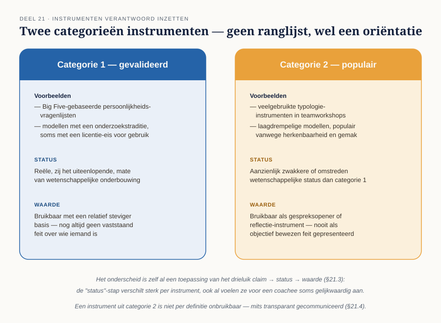

Cursus Coachen · Niveau 2 (NOBCO/EMCC EIA Practitioner · ICF Level 2) · Deel 21 van 30
Instrumenten verantwoord inzetten
U hebt inmiddels vijf methodiekinvalshoeken geleerd en het drieluik claim → status → waarde vijf keer toegepast. Dit deel generaliseert dat patroon naar het bredere landschap van instrumenten en tests die coaches tegenkomen — persoonlijkheidsvragenlijsten, typologieën, en aanvullende specialistische technieken — en behandelt hoe u daar verantwoord mee omgaat.
7secties
±2u45leestijd + werkboek
4controlevragen
1figuur
Positionering. Deze cursus bereidt voor op twee routes tegelijk — het EMCC Competence Framework (NOBCO/EMCC EIA) en de ICF Core Competencies — en vervangt geen van beide officiële trajecten. Studeer voor een accreditatie of credential altijd óók het bronmateriaal van NOBCO/EMCC of ICF zelf.
Niveau 2: ⑪ Intake en driehoekscontract → ⑫ Traject ontwerpen → ⑬ Oplossingsgericht coachen → ⑭ Cognitieve invalshoek → ⑮ Transactionele analyse → ⑯ Systemisch werken → ⑰ Werken met emoties → ⑱ Lichaam en non-verbaal → ⑲ Patronen en overtuigingen → ⑳ Weerstand en stagnatie → ㉑ Instrumenten verantwoord inzetten (hier) → ㉒ Intervisie en tussenassessment
01
Waarom dit deel nu
⏱ 15 min
U hebt inmiddels vijf methodiekinvalshoeken geleerd (oplossingsgericht, cognitief, TA, systemisch, plus emotie/lichaam) en het drieluik claim→status→waarde vijf keer toegepast. Dit deel generaliseert dat patroon naar het bredere landschap van instrumenten en tests die coaches tegenkomen — persoonlijkheidsvragenlijsten, typologieën, en meer specialistische technieken — en behandelt hoe u daar verantwoord mee omgaat, inclusief instrumenten die u mogelijk via een aanvullende opleiding beheerst.
Aan het eind van dit deel kunt u:
het onderscheid tussen gevalideerde en populaire instrumenten toelichten;
elk instrument of elke test — regulier of elective — beoordelen via claim → status → waarde;
een aanvullende specialistische techniek transparant en met aparte instemming introduceren, zonder de bestaande harde grenzen te verleggen.
02
Twee categorieën instrumenten
⏱ 20 min
Categorie 1 — gevalideerde, breed erkende instrumenten: persoonlijkheidsvragenlijsten en modellen met een onderzoekstraditie en (soms) een licentie-eis voor gebruik, zoals Big Five-gebaseerde instrumenten. Deze categorie kent een reële, zij het uiteenlopende, mate van wetenschappelijke onderbouwing.
Categorie 2 — populaire, laagdrempelige typologieën: instrumenten die breed gebruikt worden in coaching- en teamcontext vanwege hun herkenbaarheid en gebruiksgemak, met een aanzienlijk zwakkere of omstreden wetenschappelijke status dan categorie 1. Denk aan veelgebruikte typologie-instrumenten in teamworkshops.
Het onderscheid tussen de twee categorieën is zelf al een toepassing van het drieluik: de "status"-stap verschilt sterk per instrument, ook al voelen ze voor een coachee soms gelijkwaardig aan.

Figuur 21-1 — twee categorieën instrumenten, geen ranglijst maar een oriëntatie (§21.2)
Controlevraag
Uit Werkboek deel 21, Opdracht 21.1 — Categorie bepalen
1Kies twee instrumenten of tests die je uit de praktijk kent (of zoek er twee op) en bepaal voor beide, met een korte onderbouwing, of ze eerder in categorie 1 (gevalideerd) of categorie 2 (populair, zwakker onderbouwd) vallen.Toon antwoord
Er is geen uitputtende, gesloten lijst van "goede" en "slechte" instrumenten — het leerdoel is de vaardigheid om zelf te beoordelen. Voorbeeld: een Big Five-gebaseerde vragenlijst valt in categorie 1 — brede onderzoekstraditie, vaak een licentie-eis. Een populaire typologie-test die in veel teamworkshops wordt gebruikt valt eerder in categorie 2 — herkenbaar en laagdrempelig, maar met een aanzienlijk zwakkere wetenschappelijke status. Bepalend is niet populariteit, maar de onderzoeksbasis van het instrument zelf.
03
Het drieluik als filter, nog een keer
⏱ 25 min
Voor élk instrument dat u overweegt, geldt dezelfde drie stappen als bij GROW (deel 6), oplossingsgericht werken (deel 13), RET (deel 14), TA (deel 15) en systemisch werken (deel 16):
Het stramien, nog een keer
1. Claim — wat beweert dit instrument letterlijk? 2. Status — wat is de onderzoeksbasis, en behoort dit tot categorie 1 of 2? 3. Waarde — wat kunt u er, gegeven die status, verantwoord mee in een coachsessie?
Een instrument met een zwakkere status (categorie 2) is niet per definitie onbruikbaar — het kan waardevol zijn als gespreksopener of reflectie-instrument, zolang u dat zo aan de coachee communiceert, in plaats van het te presenteren als een objectief, wetenschappelijk vastgesteld feit over wie iemand is.
Controlevraag
Uit Werkboek deel 21, Opdracht 21.2 — Het drieluik op een zelfgekozen instrument
1Pas het drieluik toe op een van de twee instrumenten uit opdracht 21.1: (1) Claim, (2) Status, (3) Waarde.Toon antwoord
Voorbeeld voor een populaire typologie-test (categorie 2): Claim — mensen zijn in te delen in een beperkt aantal vaste typen die hun voorkeuren en gedrag verklaren. Status — omstreden wetenschappelijke onderbouwing, breed gebruikt vanwege herkenbaarheid, niet vanwege bewezen voorspellende waarde. Waarde — bruikbaar als gespreksopener om over voorkeuren te reflecteren, expliciet niet bruikbaar als objectief oordeel over wie iemand is of kan worden.
04
Electives: aanvullende technieken
⏱ 30 min
Sommige coaches hebben, naast deze cursus, een aanvullende specialisatie — bijvoorbeeld in hypnose/zelfhypnose-technieken of in het Human Design System. Beide zijn, zoals hun eigen cursusmateriaal expliciet vermeldt, positioneerbaar als zelfreflectie- of coachinginstrument met een transparante disclaimer, mits met een eigen, aparte scholing gevolgd.
Drie regels gelden wanneer een coach zo'n aanvullende techniek wil inzetten binnen een coachtraject:
Transparantie vooraf — de coachee weet expliciet dat dit een aanvullende, specialistische techniek is, met de eigen status (claim→status→waarde) van dát instrument, niet van coaching in het algemeen.
Instemming, apart van het coachcontract — net als bij de systemische grens uit deel 16, wordt dit niet stilzwijgend vermengd met het reguliere coachtraject; de coachee kiest er expliciet voor.
Dezelfde harde grenzen blijven gelden — de therapiegrens (deel 1, deel 9) en de grens rond systemische interventietechnieken (deel 16) worden door een elective nooit opgeheven. Een aanvullende techniek verruimt het instrumentarium, niet het domein van coaching zelf.
Deze drie regels volgen dezelfde logica als de afbakening in deel 16: een specialistische kwalificatie geeft een coach meer instrumenten, maar verplaatst nooit de grens van wat coaching is.
05
Toepassing: Ronald
⏱ 25 min
Stel dat een coach die ook geschoold is in het Human Design System overweegt dit bij Ronald in te zetten om zijn besluitvormingsstijl te verkennen. Volgens §21.4: eerst transparant uitleggen wat het instrument wel en niet claimt (drieluik, categorie 2 qua status), apart instemming vragen los van het lopende coachcontract, en de therapiegrens en de eerder afgesproken driehoeksafspraken (deel 11) onverkort laten gelden. Ronald mag dit weigeren zonder dat dit het reguliere coachtraject beïnvloedt.
Controlevraag
Uit Werkboek deel 21, Opdracht 21.3 — Een elective transparant introduceren (Ronald)
1Schrijf, voor de situatie uit §21.5, de introductie uit die je aan Ronald zou geven — inclusief de drie elementen uit §21.4 (transparantie, aparte instemming, geldende grenzen).Toon antwoord
Model: "Ronald, ik heb naast deze coachopleiding ook een aparte scholing gevolgd in een instrument voor het verkennen van besluitvormingsstijl. Dat instrument staat los van dit coachtraject — het is geen onderdeel van wat we hebben afgesproken, en de wetenschappelijke onderbouwing ervan is beperkt; ik zou het gebruiken als reflectie-instrument, niet als objectief oordeel over jou. Wil je dat ik dit een keer apart inzet, los van onze reguliere sessies? Je kunt ook gewoon nee zeggen, zonder dat dit iets verandert aan het traject zoals we dat nu doen." De veelgemaakte fout is de "aparte instemming"-stap over te slaan door het aanbod te vermengen met het lopende gesprek — dit voorbeeld presenteert het bewust als een losstaande, expliciete keuze.
06
De doorverwijsvraag
⏱ 20 min
Zou u een van deze instrumenten — gevalideerd of populair, regulier of elective — bij Femke inzetten? Nee. Dit deel herhaalt de les uit deel 13, 14, 15 en 16 een laatste keer, nu voor het volledige instrumentarium: geen instrument, hoe krachtig ook, verandert iets aan de uitkomst van de intake in deel 9.
Controlevraag
Uit Werkboek deel 21, Opdracht 21.4 — De doorverwijsvraag, samengevat
1Blader terug naar deel 13, 14, 15 en 16 en noteer in één zin per deel waarom de doorverwijsvraag daar steeds nee bleef bij Femke. Wat is, na vijf keer, het onderliggende principe dat je hieruit meeneemt naar niveau 3?Toon antwoord
Bij elk methodiekdeel (13-16) én bij dit deel bleef het antwoord nee, ongeacht de kracht of relevantie van de methodiek zelf, omdat de reden voor het "nee" niet in het instrument zit, maar in wat de intake in deel 9 al heeft vastgesteld. Het onderliggende principe: geen enkele techniek, methodiek of instrument verandert iets aan de vraag óf coaching de passende vorm van hulp is — die vraag wordt uitsluitend bij de intake beantwoord, niet door de keuze van een specifieke aanpak.
07
Samenvatting
⏱ 10 min
Twee categorieën instrumenten: gevalideerd (categorie 1) en populair maar wetenschappelijk zwakker onderbouwd (categorie 2) — het drieluik maakt dit onderscheid expliciet per instrument.
Elke instrumentkeuze doorloopt claim → status → waarde, net als de vijf eerdere methodiekdelen.
Electives (zoals hypnose- of Human Design-technieken) vragen transparantie, aparte instemming, en laten de bestaande harde grenzen onverkort intact.
De doorverwijsvraag blijft, voor het laatst in deze reeks, ongewijzigd: niet bij Femke.
Reflectievragen — geen antwoordsleutel
Heeft u zelf een instrument of aanvullende techniek waarvan u vermoedt dat het in categorie 2 valt, maar dat u toch waardevol vindt? Hoe zou u dat transparant introduceren? En wat verandert er in uw beeld van "een goede coach" nu u weet dat verantwoordelijk instrumentgebruik minstens zo belangrijk is als het kennen van veel instrumenten?
Verder naar deel 22
Deel 22 sluit niveau 2 af met intervisie — collegiale reflectie op eigen praktijkcasuïstiek — en een tussenassessment tegen vijf markers uit deel 11-21, met de niet-compenseerbare beoordelingsregel uit deel 10 opnieuw als uitzondering.